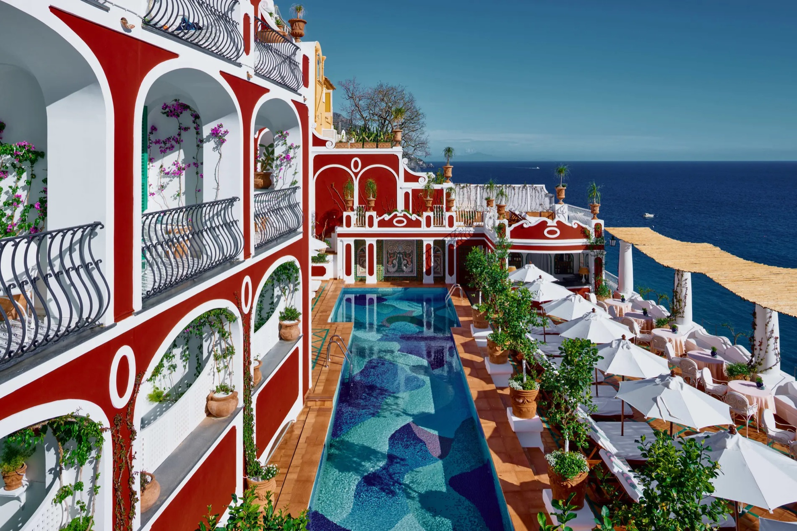

The address in Positano itself — with a rooftop pool overlooking the Amalfi coastline that sits at #02 on my worldwide list.
On my featured Italy page I describe Le Sirenuse in one line: the address in Positano itself, for guests who want to be in the center of the action. That's the whole positioning — this is the hotel woven into the town, not perched apart from it.
It also holds #02 in my ranking of the world's most jaw-dropping hotel pools: a rooftop pool overlooking the Amalfi coastline, with Positano's stacked pastel houses falling away beneath you. Only one pool in the world beat it on my list, and that one had to be carved out of a cliff to do it.
This is one of the three Amalfi Coast properties I feature — alongside Il San Pietro and the Caruso — and the one I book when clients want Positano's energy at their doorstep rather than a shuttle ride away.

The rooftop pool. Overlooking the Amalfi coastline — #02 on my worldwide pools list, and the town's best perch.
The center-of-the-action location. Positano's boutiques, restaurants, and beach are steps away — no transfers, no logistics, just walk out the door.
An icon that earns it. Family-run, storied, and still one of the most requested bookings on my desk every single summer.
Being in the center means being in the center. Positano in peak season is lively. If you want the coast with more composure, look at the Caruso up in Ravello.
Compare it against Il San Pietro. The other Positano-area icon on my list is Il San Pietro — carved into the cliffs just outside town. In-town energy versus cliffside seclusion is the real decision.
Book far ahead. The famous rooms and sea-view categories go first, often close to a year out for peak weeks.
For guests who want to be in the center of the action in Positano, this is the address — and the rooftop pool is the bonus that made my worldwide list.
Rates through me are identical to booking direct — the perks are not. As a Fora advisor, my clients receive a space-available upgrade, daily breakfast, and a hotel credit — plus my direct line to the team on property before and during your stay.
Check Availability